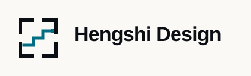
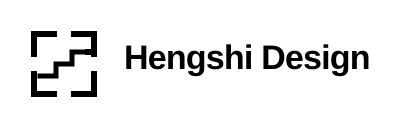

16 px · supported
Framework Relay optical-size evidence
Rendered CSS sizes below are deterministic DPR1 references. The 144 px lockup is deliberately rejected. Physical 38 mm output still requires substrate and ink proof. Exploratory, unregistered, trademark not cleared.
Icon-scale variants
20 px · supported
24 px · supported
32 px · supported
Horizontal lockup

144 px · rejected
168 px · supported minimum

38 mm · conditional print minimum